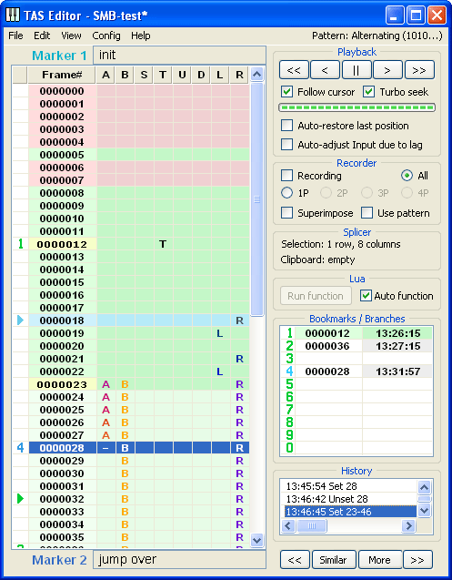
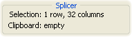
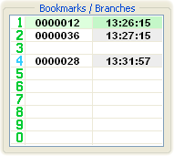
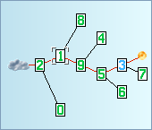
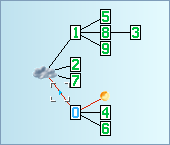
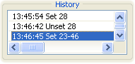

Панель инструментов

Панель инструментов содержит 7 разделов:

В самом верху находится раздел Проигрывателя (Playback). Проигрыватель управляет процессом эмуляции игры – держит на паузе, проигрывает в любом направлении, перематывает на желаемый кадр и так далее. Он позволяет обращаться с видеоиграми так же легко, как с обычной видеозаписью, невзирая на их интерактивность.
Вверху находятся 5 управляющих кнопок Проигрывателя.
Кнопка "||" (пауза/продолжить) является аналогом клавиатурного хоткея Pause Emulation. При её нажатии эмуляция игры либо приостанавливается, либо продолжается. Если на вашей мышке есть средняя кнопка, проще нажимать её вместо кнопки "||", в этом случае даже не нужно будет подводить курсор мыши к разделу Проигрывателя.
Кнопка ">" (шаг вперёд, Advance 1 frame) перемещает голубой курсор на один кадр ниже, при необходимости заставляя FCEUX эмулировать 1 кадр игры. По этой кнопке можно не только щёлкать, но и зажимать её на некоторое время, чтобы сделать несколько шагов подряд. У этой кнопки есть аналог на клавиатуре: Shift + Вниз. Если у вашей мышки есть колесо, проще зажимать правую кнопку и прокручивать колесо на одно деление вниз вместо использования кнопки ">".
Кнопка "<" (шаг назад, Rewind 1 frame) перемещает голубой курсор на один кадр выше, а на экране FCEUX отражаются события предыдущего кадра игры. Эту кнопку тоже можно зажимать, чтобы сделать подряд несколько шагов назад. Для этой кнопки есть свой хоткей Frame Rewind (по умолчанию клавиша Backspace), а также аналог на клавиатуре: Shift + Вверх. Если у вашей мышки есть колесо, проще зажимать правую кнопку и прокручивать колесо на одно деление вверх вместо использования кнопки "<".
Кнопка "<<" (быстрая перемотка назад) тоже перемещает Курсор Проигрывателя (а значит и состояние игры) назад, но не на один кадр, а сразу на множество кадров. Эта кнопка перемещает голубой курсор прямо на кадр, на котором установлен вышестоящий Маркер. В примере с верхней картинкой при нажатии "<<" голубой курсор прыгнет на 12-й кадр (где установлен Маркер 1). Благодаря этой кнопке можно очень быстро возвращаться к началу редактируемого участка и вообще к любому ранее пройденному моменту. У этой кнопки есть аналог на клавиатуре: Shift + Page Up. Эту кнопку также можно зажимать – голубой курсор будет очень быстро прыгать по Маркерам всё выше и выше по Piano Roll, и, глядя на меняющееся изображение на экране FCEUX, вы сможете быстро найти нужный фрагмент.
Кнопка ">>" (быстрая перемотка вперёд) прыгает Курсором Проигрывателя по Маркерам вперёд. В примере с верхней картинкой при нажатии ">>" голубой курсор прыгнет на 22-й кадр (где установлен Маркер 2). Благодаря этой кнопке можно быстро проматывать события мувика вперёд. Однако в случае, если следующий Маркер находится вне Гринзоны, эмулятору потребуется какое-то время для эмуляции неизведанных кадров, поэтому прыжок голубого курсора может быть не мгновенным, придётся чуть-чуть подождать. У этой кнопки есть аналог на клавиатуре: Shift + Page Down. Эту кнопку также можно зажимать.
В качестве эксперимента попробуйте сделать мувик из тысячи кадров и поставить пару десятков Маркеров, по одному через каждые 30-50 кадров. Затем зажмите Shift и, нажимая клавиши Page Up или Page Down, почувствуйте все удобства быстрой перемотки. Помимо клавиш Page Up и Page Down можно также вращать колесо мыши, зажав клавишу Shift.
Под управляющими кнопками Проигрывателя находится индикатор выполнения (Progress bar) и четыре переключателя (Checkbox).
Прогрессбар служит для оценки оставшегося времени при добегании к указанному кадру.
Дело в том, что для мгновенного прыжка на затребованный кадр эмулятор должен хотя бы однажды проэмулировать игру до этого кадра, применив ваш мувик в качестве игрового Ввода, чтобы получить актуальное состояние игры на требуемый момент. После того, как состояние игры однажды просчитано, оно сохраняется в Гринзону, и в следующий раз эмулятор может мгновенно прыгнуть на этот кадр, пока не изменился Ввод, предшествующий этому кадру. Если Ввод изменился, потребуется новый пересчёт игровых событий, так как даже малейшее изменение нажатых кнопок может повлечь серьёзные изменения в игровом процессе. Поэтому при любом изменении Ввода Гринзона автоматически усекается, выбрасывая из памяти все кадры, на которые оказывает влияние изменившийся Ввод. И эти кадры эмулятору нужно просчитывать заново, что занимает некоторое время.
Таким образом, если вы отправляете Курсор Проигрывателя на кадр, который находится далеко от Гринзоны, вместо мгновенного перемещения голубой курсор начинает добегание (Seeking) к этому кадру. На месте целевого кадра начинает мигать тень голубого курсора, а на экране FCEUX будут быстро сменяться кадры игры по мере того, как Курсор Проигрывателя бежит к цели.
В этом случае вам придётся подождать. Время добегания зависит от расстояния между ближайшим краем Гринзоны и целевым кадром, а также от мощности вашего компьютера и ещё от ряда факторов. Прогрессбар поможет оценить оставшееся время ожидания. А если вы передумали ждать, достаточно щёлкнуть по прогрессбару левой кнопкой мыши (помимо индикатора он ещё является кнопкой) или использовать клавиатурный хоткей Cancel Seeking (по умолчанию клавиша Esc). Тогда целевой кадр перестанет мигать, голубой курсор остановится, а эмуляция будет поставлена на паузу.
Во время добегания можно изменить конечную цель, сделав щелчок в колонке иконок перед номером желаемого кадра. Если во время добегания поставить эмулятор на паузу, голубой курсор приостановится, мигание целевого кадра замедлится, но добегание не будет отменено – при отпускании паузы Курсор Проигрывателя продолжит бег к цели и автоматически остановится при её достижении.
Прогрессбар также используется во время загрузки и сохранения больших проектов Тасэдитора на диск.
Галочка "Turbo seek" позволяет влиять на скорость добегания. С помощью функции Turbo эмулятор может эмулировать игру с максимально достижимой скоростью, сокращая конечное время добегания в десятки раз. Поэтому при добегании к дальнему кадру рекомендуется установить эту галочку. Однако во время работы над ТАСом часто требуется увидеть не только конечный кадр определённого участка, но и внимательно рассмотреть все промежуточные кадры. В таких случаях следует снять эту галочку и даже уменьшить скорость эмуляции с помощью хоткеев - и =, чтобы не упустить важные детали при просмотре изображения эмулируемой игры.
Галочка "Follow cursor" заставляет Piano Roll следить за перемещениями Курсора Проигрывателя и автоматически скроллировать видимую область Piano Roll таким образом, чтобы голубой курсор всегда был виден пользователю. Это позволяет отслеживать глазами проигрываемый Ввод прямо по ходу эмуляции. Обычно во время редактирования больших участков эту галочку необходимо отключать, чтобы Piano Roll не убегал от места редактирования Ввода.
Галочка "Auto-restore last position" заставляет Проигрыватель автоматически запускать добегание после вынужденного отступления голубого курсора. Каждый раз, когда вы меняете Ввод, Гринзона усекается после кадра изменения, и Курсор Проигрывателя отступает назад вместе с ней, забывая о событиях, ставших не актуальными после изменения Ввода. С помощью галочки автовосстановления позиции вы сможете сразу увидеть новые события на этих кадрах. Когда галочка установлена, после каждого изменения Ввода Проигрыватель будет заново эмулировать изменившийся участок, позволяя ТАСеру оперативно сравнивать различные варианты развития игровых событий.
Благодаря автоматическому восстановлению позиции ТАСер может сконцентрировать внимание только на редактировании Ввода и в кратчайшие сроки перебрать множество вариантов действий на одном участке. Подробнее об этом методе ТАСинга будет рассказано позже.
 Под Проигрывателем находится раздел Рекордера (Recorder). Рекордер служит для записи кнопочного Ввода с клавиатуры (или геймпада) в мувик, прямо как при обычной игре в любом эмуляторе.
Под Проигрывателем находится раздел Рекордера (Recorder). Рекордер служит для записи кнопочного Ввода с клавиатуры (или геймпада) в мувик, прямо как при обычной игре в любом эмуляторе.
Галочка "Recording" включает и выключает режим Записи. Перед тем как начать запись кнопочных нажатий, убедитесь, что Курсор Проигрывателя находится на нужном кадре, с которого вы хотите начать запись. Затем либо нажмите хоткей "Toggle Read-only" (по умолчанию клавиша Q), либо установите галочку Recording щелчком по ней. При этом в заголовке окна Тасэдитора появится слово "Recording", а в окне FCEUX появится сообщение "Movie is now Read+Write". Теперь вы можете либо отпустить паузу и проходить игру в обычном или замедленном состоянии, либо впечатывать кнопки покадрово с помощью хоткея Frame Advance. По мере продвижения голубого курсора мувик будет заполняться информацией о нажатых вами кнопках.
Можно неоднократно перезаписывать один и тот же участок мувика, затирая старые данные новой информацией о нажатиях/отпусканиях. Если вам не понравилось, как был пройден только что записанный участок (например, персонаж упал в яму), переставьте Курсор Проигрывателя повыше, а именно на кадр, после которого были совершены неправильные нажатия кнопок (например, слишком поздно была нажата кнопка A), затем продолжите Запись, нажимая уже правильные кнопки в правильное время.
Когда участок готов, следует отключить режим Записи, чтобы случайно не затереть Ввод при навигации Курсором Проигрывателя по мувику. Уберите галочку "Recording" щелчком или нажатием хоткея. Обычно при работе в Тасэдиторе галочка Записи почти всё время отключена, так как вместо Записи используется прямое редактирование мувика мышью.
Благодаря возможности обратной перемотки вы можете добавлять Ввод по частям, а не только по порядку следования кадров. Например, теоретически можно сначала записать второй уровень игры, а затем первый. Или же записать уровни по порядку, а потом переписать первый, оставив второй уровень без изменений.
Рекомендуется комбинировать возможности Рекордера с возможностями Piano Roll. Для длинных и лёгких участков игры обычно проще записать последовательность нажатий с клавиатуры или удобного USB-геймпада, а вот для мелких разбросанных правок проще использовать мышку.
Галочка "Superimpose" (Наложение) в разделе Рекордера позволяет объединять новый Ввод с уже имеющимся Вводом на том же участке мувика. Например, сначала с помощью мыши вы можете нарисовать зажатие кнопки R на длинном участке, чтобы персонаж всё время бежал вправо. Затем можно поставить галочку "Superimpose", включить Запись и нажимать только кнопки прыжка и стрельбы, без необходимости вручную нажимать кнопку Вправо. В игре в это время персонаж будет бежать вправо и прыгать/стрелять по команде.
У галочки "Superimpose" помимо состояний "включена" и "отключена" есть дополнительное третье состояние – промежуточное между "включена" и "отключена". Принцип работы таков: если пользователь нажимает какие-либо кнопки геймпада во время Записи, эти кнопки будут записаны в мувик вместо старого Ввода. Если же пользователь не нажимает ни одной кнопки во время Записи, то старый Ввод на текущих кадрах не удаляется (то есть Рекордер не будет записывать "отсутствие нажатия всех кнопок" поверх старого Ввода).
Таким образом третье состояние галочки "Superimpose" позволяет вам не беспокоиться о постоянном включении и отключении Записи в тех случаях, когда требуется записывать Ввод только в некоторые промежутки старого Ввода.
Галочка "Use pattern" (Использовать шаблон) применяет текущий шаблон во время Записи кнопок. Название текущего шаблона можно увидеть в верхнем правом углу окна TAS Editor (самый последний пункт меню). При щелчке по этому пункту появляется ниспадающее меню, где можно выбрать другой шаблон из списка заготовленных.
Шаблоны используются для ускорения ввода частых нажатий и отпусканий. Например, если в игре требуется стрелять с максимально возможной частотой (то есть чередовать один кадр нажатия кнопки B и один кадр отпускания кнопки B), можно просто выбрать шаблон "Alternating (1010...)" и зажать кнопку B не заботясь о её периодическом отпускании – благодаря применению шаблона в нужные промежутки времени нажатие кнопки просто не будет записываться.
Кроме управляющих галочек в Рекордере есть круглые радиокнопки (Radio buttons), реализующие функцию мультитрекинга.
Многодорожечная Запись серьёзно облегчает работу при традиционном ТАСинге игры на двоих и более игроков. Вместо того, чтобы нажимать руками кнопки одновременно на двух геймпадах, можно сначала записать прохождение короткого участка игры первым персонажем, а затем записать рядом кнопки второго.
По умолчанию настроена Запись всех игроков одновременно (установлена радиокнопка "All"). Вы можете выбрать отдельный джойстик, щёлкнув по соответствующей радиокнопке (1P, 2P и т.д. – количество доступных геймпадов зависит от типа мувика). Также для переключения радиокнопок можно использовать хоткей "Switch current Multitracking mode" (по умолчанию клавиша W). Теперь во время Записи эмулятор будет воспринимать только нажатия кнопок для выбранного игрока, а колонки Ввода для остальных игроков не будут изменяться, даже если вы случайно нажмёте какую-нибудь кнопку на их джойстике.

Под Рекордером находится раздел Монтажа (Splicer).
Нужно сразу отметить, что вам здесь не пригодится опыт работы в программах для нелинейного монтажа видео, ведь в тех программах вы оперируете готовым видеоматериалом (Выводом), а в Тасэдиторе можно редактировать только Ввод, при этом финальный видеоряд всё равно определяется самой игрой.
В этом разделе выводится информация о размере текущего Выделения – сколько строк (rows) выделено в высоту, и сколько колонок (columns) занимает Ввод в ширину. Благодаря этой информации вы можете использовать Выделение в качестве линейки для измерений. Например, чтобы быстро узнать расстояние (в кадрах) между двумя игровыми событиями, достаточно щёлкнуть мышкой по одному и растянуть Выделение до другого – выделятся все кадры между этими двумя строчками, а в разделе Splicer появится сообщение "Selection: N rows, M columns", где N – искомое количество кадров.
Также здесь находится информация о данных в Буфере Обмена – содержится ли там Ввод, который можно вставить в любое место мувика, или не содержится. Если содержится, то указывается количество строк и колонок этого Ввода. Данные в Буфере Обмена хранятся независимо от Тасэдитора, они сохраняются там даже после закрытия FCEUX, пока какая-нибудь другая программа не скопирует в Буфер Обмена что-нибудь своё.
В разделе "Splicer" нет никаких управляющих элементов, так как все команды для монтажа Ввода вынесены в раздел меню Edit, а также назначены на быстрые клавиши клавиатуры. Рекомендуется использовать в процессе монтажа именно клавиатурные комбинации – их легко запомнить, а скорость работы повышается во много раз.
Перечень всех функций Монтажного инструмента.
По сути это стандартные возможности любого текстового редактора (копипаст и т.п.), но в Тасэдиторе их можно применять к Вводу прямо во время эмуляции игры (даже при отпущенной паузе), что позволяет на лету анализировать результаты их применения и оперативно корректировать свои действия.
Наиболее часто во время ТАСинга в Тасэдиторе вы будете использовать Ctrl + Delete (Delete Frames) и Ctrl + Insert (Clone Frames) для быстрого перемещения редактируемых участков вверх/вниз по списку кадров, тем самым совершая в игре определённые действия раньше или позже по времени.
В отличие от хоткеев FCEUX эти клавиатурные комбинации нельзя переназначить, поэтому, если у вас на Ctrl, Insert или Delete назначены какие-то другие функции эмулятора, необходимо изменить настройки эмулятора.

Под Монтажным инструментом находится маленький раздел Lua.
Здесь находится одна неактивная кнопка и одна галочка, назначение которых будет описано позже. Пока вы не знакомы с Lua-скриптингом, этот раздел вам не понадобится.
Использование скриптового языка Lua позволяет автоматизировать часть работы ТАСера и даже создавать собственные плагины для Тасэдитора. Этому посвящена отдельная часть главы Продвинутые возможности.

Далее располагается раздел Закладок (Bookmarks/Branches). О Закладках следует рассказать подробнее.
Закладки являются развитием принципа эмуляторных сэйвов. До Тасэдитора сэйвы были единственным способом навигации по мувику, с их помощью ТАСер возвращался к месту ошибки и исправлял её. В Тасэдиторе есть множество других способов навигации, однако и этот способ решено было оставить для совместимости со старыми принципами.
В вашем распоряжении 10 слотов для Закладок, которые нумеруются цифрами от 0 до 9. Вы можете поставить любую из 10 Закладок на любой кадр мувика, предварительно указав на этот кадр Курсором Проигрывателя.
1 способ – поставьте голубой курсор на кадр, где должна появиться Закладка и сделайте эмуляторный сэйв (по умочанию это Shift + любая из клавиш в ряду F1-F10). Например, нажмите Shift + F1 для установки первой Закладки. Она тут же отобразится в Списке Закладок, сверкнув красным светом.
2 способ – поставьте голубой курсор на нужный кадр и щёлкните правой кнопкой мыши по строке Списка Закладок. Например, щёлкните правой кнопкой по второй строке Списка, чтобы установить вторую Закладку.
Нечаянно совершённую установку Закладок можно отменять с помощью Ctrl + Z.
В Списке Закладок отображается цифровой номер Закладки, номер кадра Закладки и время установки Закладки. При наведении курсора мыши на время Закладки (правый столбец в Списке) вы увидите всплывающий скриншот из игры, дающий представление о содержимом Закладки с точки зрения игрового процесса. Когда у вас будет много Закладок, скриншоты помогут быстрее в них ориентироваться.
В момент установки Закладки Тасэдитор сохраняет в указанный слот не только текущее место положения Курсора Проигрывателя, но и всё содержимое мувика на текущий момент времени. Теперь вы в любой момент можете либо "прыгнуть на Закладку в пространстве", вернув Курсор Проигрывателя на запомненное Закладкой место, либо "прыгнуть на Закладку во времени", вернув весь мувик в запомненное Закладкой состояние.
Чтобы вернуться на Закладку в пространстве, щёлкните левой кнопкой мыши по левой половине нужной Закладки (более светлая половина Списка Закладок, где написан номер кадра, на котором установлена Закладка). Или же воспользуйтесь клавиатурой – нажмите соответствующую цифру (цифровые клавиши 0-9 расположены под клавишами F1-F10). О совершении прыжка вы сможете догадаться не только по перемещению голубого курсора в Piano Roll, но и по зелёной вспышке использованной Закладки.
Чтобы вернуться на Закладку во времени, щёлкните левой кнопкой мыши по правой половине нужной Закладки (более яркая половина Списка Закладок, где написано время создания Закладки). Или же загрузите соответствующий эмуляторный сэйв (по умолчанию это клавиши F1-F10). Если при прыжке во времени изменяется Ввод мувика (когда восстанавливается его состояние на момент создания Закладки), то использованная Закладка вспыхивает синим светом, иначе вспыхивает зелёным, как при простом прыжке Курсора Проигрывателя. В случае изменения Ввода, как обычно, возможно автоматическое усечение Гринзоны. И, конечно же, вы всегда можете отменить это изменение с помощью Ctrl + Z, вернув мувик к состоянию, которое у него было перед прыжком на Закладку во времени.
Таким образом, часть Закладок можно использовать для ускорения навигации. Например, поставить Закладку на начало просматриваемого участка мувика и периодически возвращать Курсор Проигрывателя на кадр этой Закладки, чтобы повторно проиграть события игры на всём участке. Впрочем, для этой же цели можно поставить в начале участка обычный Маркер. Преимущество Закладки перед Маркером только в том, что на Закладку можно будет мгновенно прыгнуть из любого сколь угодно отдалённого места мувика, а к Маркеру издалека нужно добираться прыжками через соседние Маркеры.
Другую часть Закладок можно использовать для хранения альтернативных вариантов прохождения одного и того же участка игры. При ТАСинге сложных игр мы не всегда можем сразу оценить степень оптимальности той или иной стратегии прохождения уровня. Порой ТАСеру требуется записать несколько разных способов прохождения одного и того же участка игры, а затем тщательно сравнить готовые мувики и выбрать наиболее подходящий, чтобы оставить его в конечном ТАСе.
В традиционном ТАСинге каждый вариант прохождения хранится в отдельном файле (сэйве), и для переключения между мувиками нужно загружать соответствующие сэйвы, созданные во время записи альтернативных стратегий прохождения.

В Тасэдиторе все сохранённые варианты прохождения хранятся вместе, образуя между собой иерархию под названием Дерево ответвлений (Branches Tree). Для переключения между альтернативными ответвлениями нужно загрузить соответствующую Закладку, вернув мувик на желаемую ветвь заготовленных вариантов развития истории. По сути всё так же, как раньше. Но подход Тасэдитора позволяет удобно визуализировать все альтернативные стратегии в виде схемы, чтобы облегчить ориентацию ТАСера среди множества записанных вариантов.
Когда вы записываете два варианта прохождения второго уровня игры, первый уровень в обоих вариантах проходится одинаково, так что расхождение Ввода идёт не с самого начала мувика, а только с начала второго уровня. Если на кадре перед началом второго уровня вы когда-то поставили Закладку 1, на схеме будет видно расхождение двух линий, начиная с цифры 1, а с начала мувика до цифры 1 оба варианта будут совпадать в виде одной линии.
По расцветке линий на схеме можно будет определить, какие Закладки содержат мувик, совпадающий с мувиком текущей Закладки. Например, если ставить по одной Закладке в конец каждого уровня, то все эти Закладки будут объединены между собой красной линией, так как мувик каждой следующей Закладки фактически состоит из мувика предыдущей Закладки, плюс дописанного прохождения ещё одного уровня.
В качестве эксперимента создайте короткий мувик без Закладок, установите Курсор Проигрывателя на конец мувика и сохраните Закладку в первый слот (Shift + F1). Затем добавьте после кадра Закладки несколько кадров и нарисуйте на них несколько кнопочных нажатий, затем проиграйте эти нажатия и сохраните Закладку во второй слот (Shift + F2). Теперь верните мувик во времени на состояние первой Закладки (F1), опять добавьте в мувик несколько кадров после первой Закладки и нарисуйте на них несколько кнопочных нажатий, отличающихся от тех, что сохранены во второй слот. Затем проиграйте эти альтернативные нажатия до конца и сохраните Закладку в третий (Shift + F3) или какой-либо другой слот.
Теперь щёлкните левой кнопкой мыши по заголовку раздела Закладок (по надписи Bookmarks/Branches). При этом Список Закладок сменится на изображение схемы ответвлений (Branches). Если мувик третьей сохранённой Закладки отличается от мувика второй Закладки, но это различие начинается после кадра, где установлена первая Закладка, то вы должны увидеть картину наподобие показанной выше. Тучка символизирует начало проекта (корень иерархии). Закладки представлены соответствующими номерами, синим номером отмечена текущая Закладка (последний использованный слот). Если после сохранения или загрузки Закладки в мувик уже вносились изменения, на схеме появляется фаербол, который символизирует конец мувика.
На схеме также отображается текущая позиция Курсора Проигрывателя. Попробуйте перетаскивать голубой курсор мышкой вверх и вниз по Piano Roll, либо просто проиграть весь мувик от начала до конца (нажмите Shift + Home и отпустите паузу эмулятора). Вы увидите перемещение маленькой голубой стрелки по красным линиям, соединяющим все Закладки в текущей хронологии. Например, если текущей Закладкой является вторая, значок Курсора Проигрывателя будет перемещаться по маршруту "тучка -> Закладка 1 -> Закладка 2". А остальные Закладки останутся в стороне, так как они представляют альтернативную хронологию, не совпадающую с текущим проигрываемым мувиком.
Дерево ответвлений автоматически перестраивается каждый раз, когда вы создаёте новую Закладку или изменяете содержимое существующей. В зависимости от сложности вашего проекта схема ответвлений может быть очень разной.
|
|
 |
 |
|
|
Вы можете наводить курсор мыши на номер любой Закладки, чтобы увидеть информацию о ней.
Также вы можете сделать одинарный щелчок левой кнопкой мыши по любой Закладке, чтобы послать Курсор Проигрывателя на кадр этой Закладки (прыжок в пространстве). Щелчком по тучке вы посылаете Курсор Проигрывателя в начало мувика (аналогично нажатию Shift + Home), а щелчком по фаерболу вы посылаете Курсор Проигрывателя в конец мувика (аналогично нажатию Shift + End).
Кроме того, вы можете сделать двойной щелчок левой кнопкой мыши, чтобы прыгнуть на указанную Закладку во времени. При этом из указанной Закладки восстанавливается состояние мувика, Закладка становится текущей, а Курсор Проигрывателя перемещается на кадр Закладки.
Наконец, вы можете сделать щелчок правой кнопкой мыши, чтобы сохранить текущий мувик и текущее положение Курсора Проигрывателя в указанную Закладку.
Как видите, в режиме просмотра Дерева ответвлений можно совершать все те же действия, что и в режиме просмотра Списка Закладок. Поэтому для опытных пользователей рекомендуется использовать в работе только вид Дерева ответвлений, так как он даёт больше информации для ТАСера. Когда нужно переключиться обратно на просмотр Списка Закладок, щёлкните по заголовку раздела (по надписи Branches).
Попробуйте использовать все 10 доступных слотов, каждый раз немного меняя Ввод текущего мувика и просматривая отредактированные изменения на экране FCEUX. Позиция каждой Закладки на Дереве ответвлений определяется, исходя из Ввода, предшествующего кадру Закладки. Подразумевается, что ТАСер всегда сначала просматривает нарисованный Ввод в эмуляторе, а только потом сохраняет проделанную часть работы в Закладку.
В руках опытного ТАСера Закладки являются мощным инструментом, позволяющим многократно облегчить процесс ТАСинга и реализовать даже то, что кажется невозможным. Обычно "невозможным" всё представляется только лишь из-за чудовищной, необъятной сложности. Но стоит лишь снизить сложность хотя бы в сотню раз (благодаря инструментам и умной организации процесса), и достижение из ранга невозможных переходит в разряд просто трудных.

Под разделом Закладок располагается раздел Истории (History).
В этом списке Тасэдитор ведёт строгий учёт всех проделанных операций в текущем проекте. Каждое действие по изменению Ввода, Маркеров или Закладок заносится в журнал, который сохраняется в файл проекта вместе с остальными данными. Полный перечень всех возможных типов записей в Журнал Истории вы можете прочитать в Справочнике.
Пункт Журнала, соответствующий текущему состоянию мувика, выделяется синим цветом. Другие пункты выделяются белым цветом, если они не имеют никакого отношения к текущему пункту, или фиолетовым цветом, если эти пункты представляют собой изменения мувика, которые происходили на том же месте, где и изменения, относящиеся к текущему пункту. Например, если текущий пункт Журнала Истории был создан в результате изменения Ввода на кадре 27, то фиолетовым цветом будут отмечены все пункты, которые затрагивают этот кадр.
Большую часть времени вам не придётся обращать внимание на этот Журнал, однако именно благодаря ему вы можете использовать Откат (Undo) и Повтор (Redo) клавишами Ctrl + Z и Ctrl + Y. Помимо этих клавишных комбинаций вы можете также щёлкать на любой строке Журнала Истории левой кнопкой мыши, чтобы откатить мувик на время создания соответствующей записи в Журнале.
При этом в Piano Roll на долю секунды появляется курсор-указка фиолетового цвета, акцентирующий внимание пользователя на месте произведённых при откате изменений. Как обычно, при изменении Ввода возможно автоматическое усечение Гринзоны.
Максимальное количество уровней отката настраивается в меню Config, от этого количества зависит максимальный объём Журнала Истории и, как следствие, объём занимаемой памяти.

В самом низу Панели инструментов находятся 4 кнопки для управления Курсором Выделения.
О назначении кнопок "<<" и ">>" легко догадаться по аналогии с верхники кнопками "<<" и ">>" в разделе Playback. Верхняя часть окна Тасэдитора содержит элементы управления для навигации Курсором Проигрывателя, а нижняя часть окна – элементы управления для навигации Курсором Выделения.
Кнопка "<<" (прыжок назад) перемещает Курсор Выделения на кадр, на котором установлен вышестоящий Маркер. В примере с верхней картинкой при нажатии "<<" синий курсор прыгнет с 27-го на 22-й кадр, где установлен Маркер 2. Благодаря этой кнопке можно очень быстро возвращать Выделение к началу редактируемого участка и вообще к началу любого отмеченного участка. У этой кнопки есть аналог на клавиатуре: Ctrl + Page Up. Эту кнопку можно зажимать – синий курсор будет очень быстро прыгать по Маркерам вверх по Piano Roll.
Кнопка ">>" (прыжок вперёд) прыгает Курсором Выделения по Маркерам вперёд. В примере с верхней картинкой при нажатии ">>" синий курсор прыгнет с 27-го на кадр за пределами видимости (где установлен следующий Маркер), при этом Piano Roll автоматически проскроллируется вслед за Курсором Выделения. Благодаря этой кнопке можно очень быстро перемещаться по мувику вниз. У этой кнопки есть аналог на клавиатуре: Ctrl + Page Down. Эту кнопку также можно зажимать.
Важная особенность этой пары кнопок в том, что Курсор Выделения в отличие от Курсора Проигрывателя не привязан к состоянию игры, поэтому его прыжки по Маркерам всегда совершаются мгновенно, не завися от наличия Гринзоны у целевого кадра. Особенно удобно читать таким образом Заметки Маркеров одну за другой в нижнем текстовом поле, нажимая Ctrl + Page Down для мгновенного перехода к следующей Заметке.
В качестве эксперимента попробуйте поставить десяток Маркеров – по одному через каждые 30-50 кадров – а затем зажмите Ctrl и, нажимая клавиши Page Up или Page Down, почувствуйте все удобства быстрой навигации. Помимо клавиш Page Up и Page Down можно также вращать колесо мыши, зажав клавишу Ctrl.
Кнопки "Similar" и "More" нужны для поиска похожих Заметок. Это ещё одна экспериментальная особенность Тасэдитора, о которой будет рассказано позже. Для новичка эта функция не требуется.
Теперь вы ознакомлены с основными принципами использования программы.
В следующей главе: системный подход к ТАСингу.
ПРАКТИЧЕСКОЕ ЗАДАНИЕ: Пройдите World 1-1 в игре Super Mario Bros (или любой другой игре) с помощью одной только мышки, без использования режима Записи. Делать спидран не нужно, просто освойтесь с процедурой рисования и стирания Ввода, а также с просмотром результатов колесом мыши. Примерное время выполнения: 20-30 минут. |
Created with the Personal Edition of HelpNDoc: Easily create Help documents